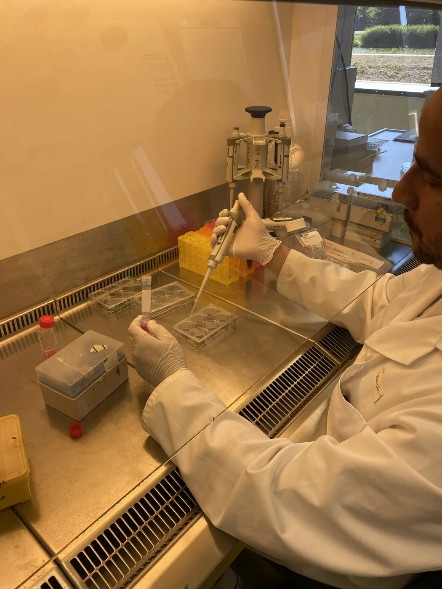
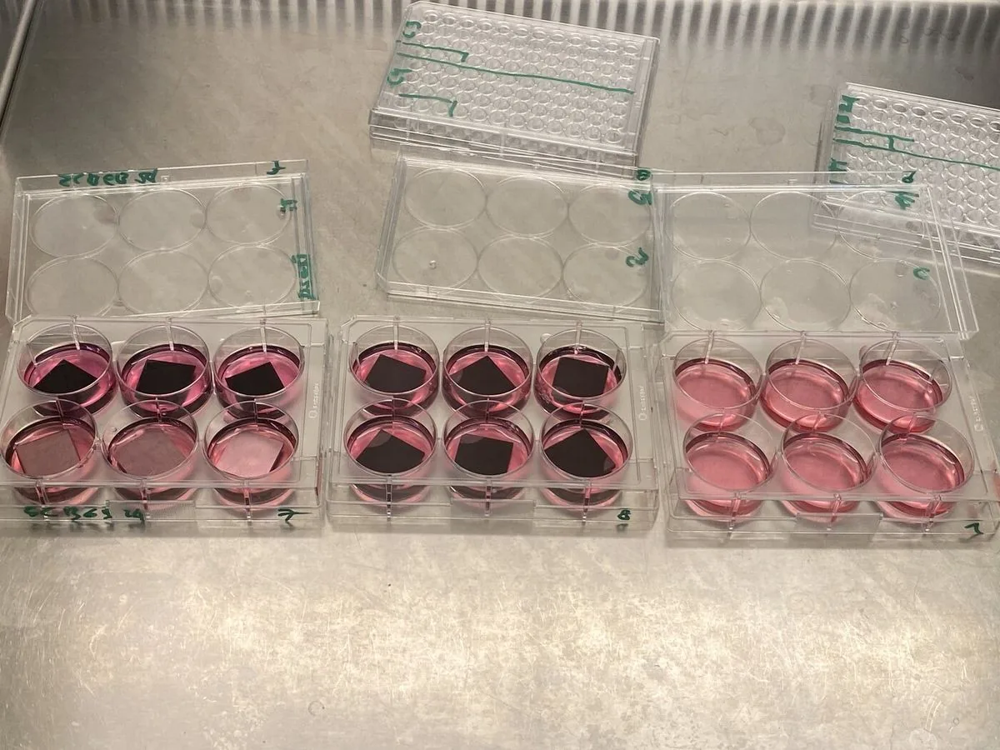
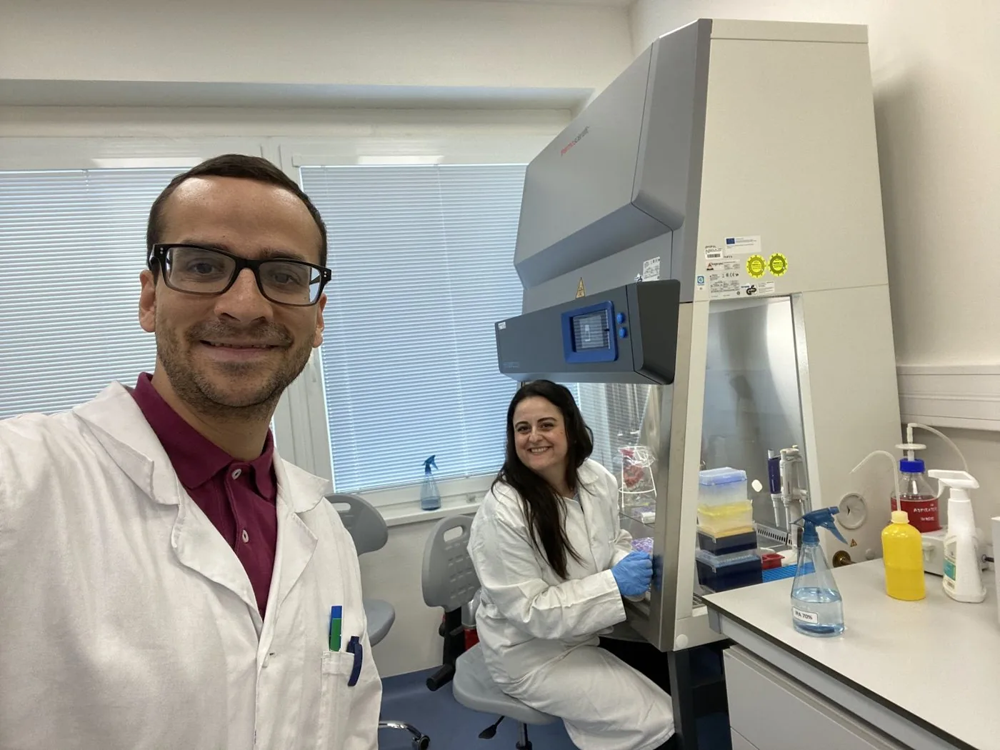
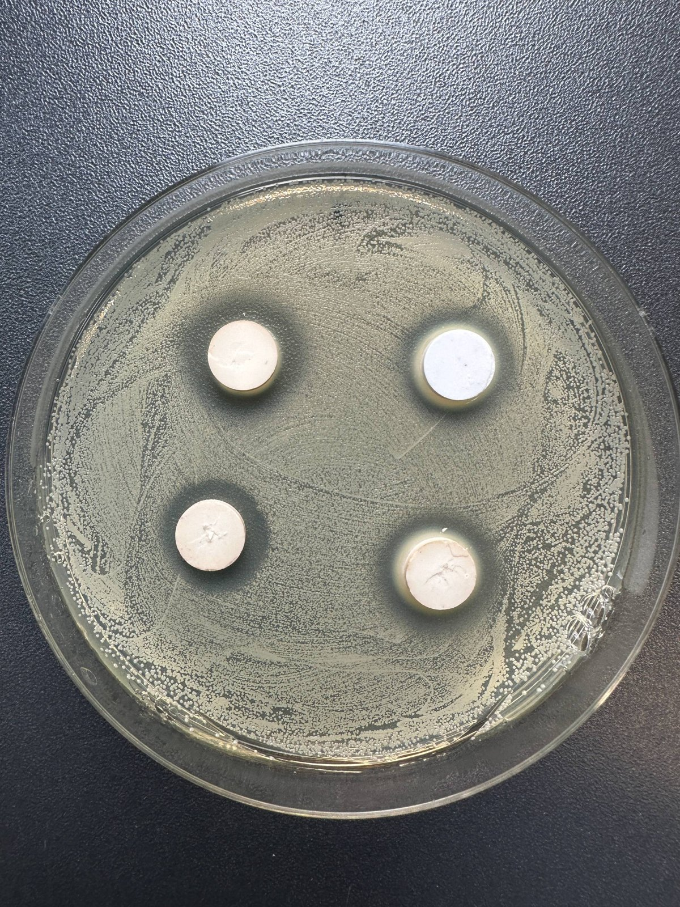
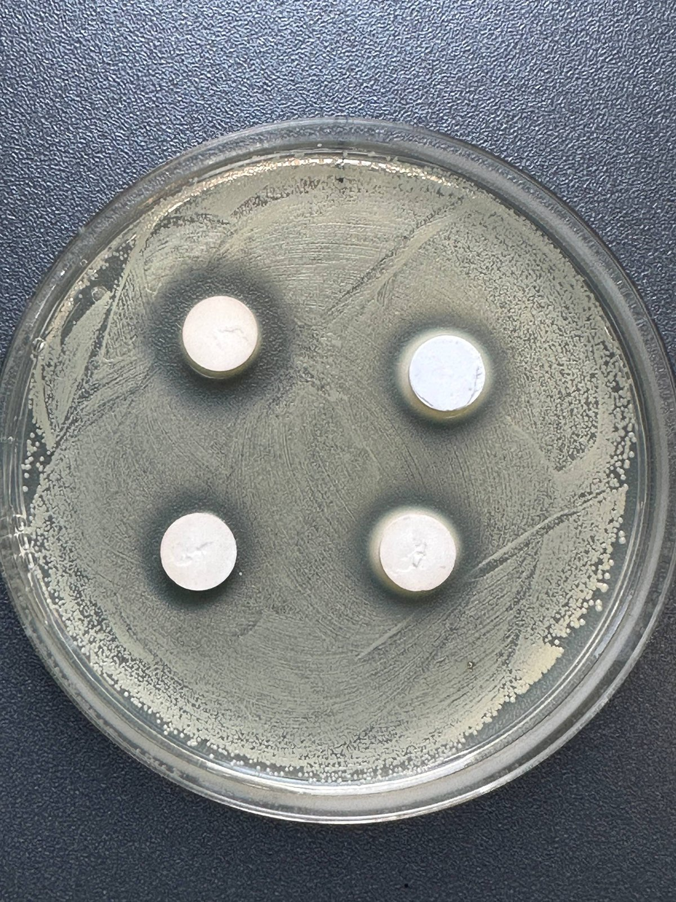
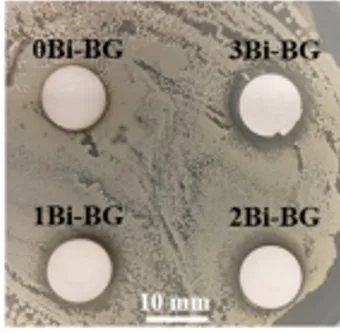
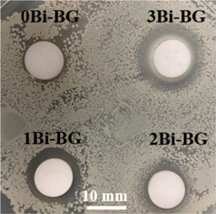
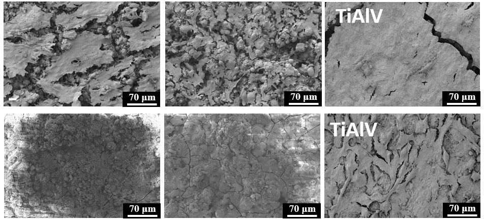
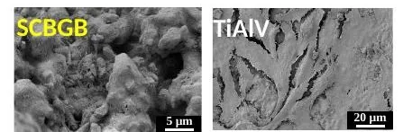
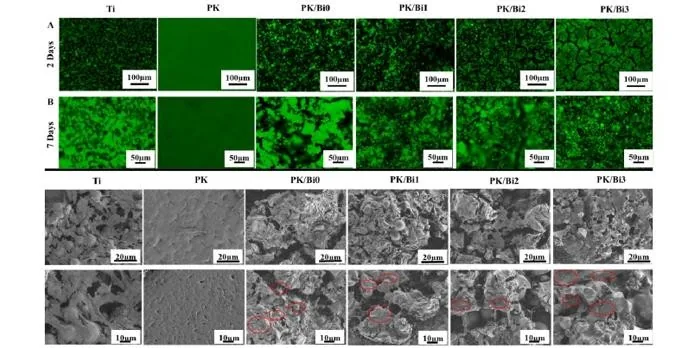

In vitro tests of powders and coatingsIn-vitro-Tests von Pulvern und BeschichtungenTesty in vitro práškov a povlakovTests in vitro des poudres et des revêtementsEnsayos in vitro de polvos y recubrimientos
Cell and antibacterial tests compare the silicate and borate glasses, first as powders and then as coatings.Zell- und antibakterielle Tests vergleichen das Silikat- und das Boratglas, zuerst als Pulver und dann als Beschichtungen.Bunkové a antibakteriálne testy porovnávajú silikátové a borátové sklo, najprv vo forme práškov a potom povlakov.Les tests cellulaires et antibactériens comparent les verres silicate et borate, d’abord sous forme de poudres puis de revêtements.Los ensayos celulares y antibacterianos comparan los vidrios de silicato y de borato, primero como polvo y después como recubrimiento.
SummaryZusammenfassungZhrnutieRésuméResumen
| FormFormFormaFormeForma | GlassGlasSkloVerreVidrio | BioactivityBioaktivitätBioaktivitaBioactivitéBioactividad | Bone-like cellsKnochenähnliche ZellenBunky podobné kostnýmCellules de type osseuxCélulas de tipo óseo | BacteriaBakterienBaktérieBactériesBacterias |
|---|---|---|---|---|
| FormFormFormaFormeFormaPowderPulverPrášokPoudrePolvo | GlassGlasSkloVerreVidrioSilicateSilikatSilikátSilicateSilicato | BioactivityBioaktivitätBioaktivitaBioactivitéBioactividadForms apatite in simulated body fluid after 3 days.Bildet nach 3 Tagen Apatit in simulierter Körperflüssigkeit.Po 3 dňoch tvorí apatit v simulovanej telesnej tekutine.Forme de l’apatite dans le fluide corporel simulé après 3 jours.Forma apatita en fluido corporal simulado tras 3 días. | Bone-like cellsKnochenähnliche ZellenBunky podobné kostnýmCellules de type osseuxCélulas de tipo óseoBiocompatible.Biokompatibel.Biokompatibilné.Biocompatible.Biocompatible. | BacteriaBakterienBaktérieBactériesBacteriasAntibacterial.Antibakteriell.Antibakteriálne.Antibactérien.Antibacteriano. |
| FormFormFormaFormeFormaPowderPulverPrášokPoudrePolvo | GlassGlasSkloVerreVidrioBorateBoratBorátBorateBorato | BioactivityBioaktivitätBioaktivitaBioactivitéBioactividadForms an apatite-like layer in simulated body fluid after 1 day.Bildet nach 1 Tag eine apatitähnliche Schicht in simulierter Körperflüssigkeit.Po 1 dni tvorí vrstvu podobnú apatitu v simulovanej telesnej tekutine.Forme une couche de type apatite dans le fluide corporel simulé après 1 jour.Forma una capa similar a la apatita en fluido corporal simulado tras 1 día. | Bone-like cellsKnochenähnliche ZellenBunky podobné kostnýmCellules de type osseuxCélulas de tipo óseoBiocompatible.Biokompatibel.Biokompatibilné.Biocompatible.Biocompatible. | BacteriaBakterienBaktérieBactériesBacteriasTested directly on agar.Direkt auf Agar getestet.Testované priamo na agare.Testé directement sur gélose.Ensayado directamente en agar. |
| FormFormFormaFormeFormaPlasma sprayPlasmaspritzenPlazmové striekanieProjection plasmaProyección por plasma | GlassGlasSkloVerreVidrioSilicateSilikatSilikátSilicateSilicato | BioactivityBioaktivitätBioaktivitaBioactivitéBioactividadEvidence of apatite formation after immersion in cell culture medium.Hinweise auf Apatitbildung nach Eintauchen in Zellkulturmedium.Známky tvorby apatitu po ponorení do kultivačného média.Signes de formation d’apatite après immersion dans le milieu de culture cellulaire.Indicios de formación de apatita tras la inmersión en medio de cultivo celular. | Bone-like cellsKnochenähnliche ZellenBunky podobné kostnýmCellules de type osseuxCélulas de tipo óseoCells grow on the coating.Zellen wachsen auf der Beschichtung.Bunky rastú na povlaku.Les cellules se développent sur le revêtement.Las células crecen sobre el recubrimiento. | BacteriaBakterienBaktérieBactériesBacteriasStrongest effect on S. aureus.Stärkste Wirkung gegen S. aureus.Najsilnejší účinok na S. aureus.Effet le plus marqué sur S. aureus.Mayor efecto frente a S. aureus. |
| FormFormFormaFormeFormaPlasma sprayPlasmaspritzenPlazmové striekanieProjection plasmaProyección por plasma | GlassGlasSkloVerreVidrioBorateBoratBorátBorateBorato | BioactivityBioaktivitätBioaktivitaBioactivitéBioactividadEvidence of apatite formation after immersion in cell culture medium.Hinweise auf Apatitbildung nach Eintauchen in Zellkulturmedium.Známky tvorby apatitu po ponorení do kultivačného média.Signes de formation d’apatite après immersion dans le milieu de culture cellulaire.Indicios de formación de apatita tras la inmersión en medio de cultivo celular. | Bone-like cellsKnochenähnliche ZellenBunky podobné kostnýmCellules de type osseuxCélulas de tipo óseoConcentrated extracts reduce cell activity.Konzentrierte Extrakte verringern die Zellaktivität.Koncentrované extrakty znižujú aktivitu buniek.Les extraits concentrés réduisent l’activité cellulaire.Los extractos concentrados reducen la actividad celular. | BacteriaBakterienBaktérieBactériesBacteriasActive at high extract concentration.Wirksam bei hoher Extraktkonzentration.Účinné pri vysokej koncentrácii extraktu.Actif à forte concentration d’extrait.Activo con extractos concentrados. |
| FormFormFormaFormeFormaSpray coatingSpray CoatingSpray coatingSpray coatingSpray coating | GlassGlasSkloVerreVidrioSilicateSilikatSilikátSilicateSilicato | BioactivityBioaktivitätBioaktivitaBioactivitéBioactividadEvidence of apatite formation after immersion in cell culture medium.Hinweise auf Apatitbildung nach Eintauchen in Zellkulturmedium.Známky tvorby apatitu po ponorení do kultivačného média.Signes de formation d’apatite après immersion dans le milieu de culture cellulaire.Indicios de formación de apatita tras la inmersión en medio de cultivo celular. | Bone-like cellsKnochenähnliche ZellenBunky podobné kostnýmCellules de type osseuxCélulas de tipo óseoCells attach as on titanium.Zellen haften wie auf Titan.Bunky priľnú ako k titánu.Les cellules adhèrent comme sur le titane.Las células se adhieren como en el titanio. | BacteriaBakterienBaktérieBactériesBacteriasActive against Gram − and +.Wirksam gegen Gram − und +.Účinné proti Gram − aj +.Actif contre Gram − et +.Activo frente a Gram − y +. |
| FormFormFormaFormeFormaSpray coatingSpray CoatingSpray coatingSpray coatingSpray coating | GlassGlasSkloVerreVidrioBorateBoratBorátBorateBorato | BioactivityBioaktivitätBioaktivitaBioactivitéBioactividadEvidence of apatite formation after immersion in cell culture medium.Hinweise auf Apatitbildung nach Eintauchen in Zellkulturmedium.Známky tvorby apatitu po ponorení do kultivačného média.Signes de formation d’apatite après immersion dans le milieu de culture cellulaire.Indicios de formación de apatita tras la inmersión en medio de cultivo celular. | Bone-like cellsKnochenähnliche ZellenBunky podobné kostnýmCellules de type osseuxCélulas de tipo óseo————— | BacteriaBakterienBaktérieBactériesBacteriasActive against Gram − and +.Wirksam gegen Gram − und +.Účinné proti Gram − aj +.Actif contre Gram − et +.Activo frente a Gram − y +. |
| FormFormFormaFormeFormaEPDEPDEPDEPDEPD | GlassGlasSkloVerreVidrioBorate + PEEKBorat + PEEKBorát + PEEKBorate + PEEKBorato + PEEK | BioactivityBioaktivitätBioaktivitaBioactivitéBioactividadEvidence of apatite formation after immersion in cell culture medium.Hinweise auf Apatitbildung nach Eintauchen in Zellkulturmedium.Známky tvorby apatitu po ponorení do kultivačného média.Signes de formation d’apatite après immersion dans le milieu de culture cellulaire.Indicios de formación de apatita tras la inmersión en medio de cultivo celular. | Bone-like cellsKnochenähnliche ZellenBunky podobné kostnýmCellules de type osseuxCélulas de tipo óseoCell activity rises with bismuth.Die Zellaktivität steigt mit dem Bismutgehalt.Aktivita buniek rastie s obsahom bizmutu.L’activité cellulaire augmente avec le bismuth.La actividad celular aumenta con el bismuto. | BacteriaBakterienBaktérieBactériesBacteriasReduces E. coli and S. aureus.Hemmt E. coli und S. aureus.Znižuje rast E. coli a S. aureus.Réduit E. coli et S. aureus.Reduce E. coli y S. aureus. |
Powder results for the silicate glass come from the papers inDie Pulverergebnisse für das Silikatglas stammen aus den Artikeln inVýsledky práškov silikátového skla pochádzajú z článkov vLes résultats sur poudre du verre silicate proviennent des articles parus dansLos resultados de polvo del vidrio de silicato proceden de los artículos de Ceram. Int. 2024 andundaety Ceram. Int. 2025; borate powder bioactivity comes fromdie Bioaktivität des Boratpulvers stammt ausbioaktivita borátového prášku pochádza zla bioactivité de la poudre borate provient dela bioactividad del polvo de borato procede de Ceram. Int. 2026.
How we testSo testen wirAko testujemeComment nous testonsCómo ensayamos
Bone-like cells (MG-63) are grown either directly on the coatings or in liquid extracts from them. Two common bacteria, E. coli (Gram-negative) and S. aureus (Gram-positive), test the antibacterial effect of the glasses and coatings, either directly or through their extracts.Knochenähnliche Zellen (MG-63) werden entweder direkt auf den Beschichtungen oder in flüssigen Extrakten daraus kultiviert. Zwei häufige Bakterien, E. coli (gramnegativ) und S. aureus (grampositiv), prüfen die antibakterielle Wirkung der Gläser und Beschichtungen, entweder direkt oder über deren Extrakte.Bunky podobné kostným (MG-63) sa kultivujú buď priamo na povlakoch, alebo v tekutých extraktoch z nich. Dve bežné baktérie, E. coli (gramnegatívna) a S. aureus (grampozitívna), slúžia na overenie antibakteriálneho účinku skiel a povlakov, a to priamo alebo prostredníctvom ich extraktov.Des cellules de type osseux (MG-63) sont cultivées soit directement sur les revêtements, soit dans des extraits liquides de ceux-ci. Deux bactéries courantes, E. coli (Gram négatif) et S. aureus (Gram positif), servent à tester l’effet antibactérien des verres et des revêtements, directement ou au moyen de leurs extraits.Las células de tipo óseo (MG-63) se cultivan directamente sobre los recubrimientos o en extractos líquidos obtenidos de ellos. Dos bacterias comunes, E. coli (Gram negativa) y S. aureus (Gram positiva), ponen a prueba el efecto antibacteriano de los vidrios y recubrimientos, ya sea directamente o a través de sus extractos.






Powders: silicate and boratePulver: Silikat und BoratPrášky: silikát a borátPoudres : silicate et boratePolvos: silicato y borato









CoatingsBeschichtungenPovlakyRevêtementsRecubrimientos






Plasma sprayPlasmaspritzenPlazmové striekanieProjection plasmaProyección por plasmaSpray coatingSpray CoatingSpray coatingSpray coatingSpray coatingElectrophoretic depositionElektrophoretische AbscheidungElektroforetická depozíciaDépôt électrophorétiqueDeposición electroforéticaRadiopacityRöntgenopazitätRádioopacitaRadio-opacitéRadiopacidad